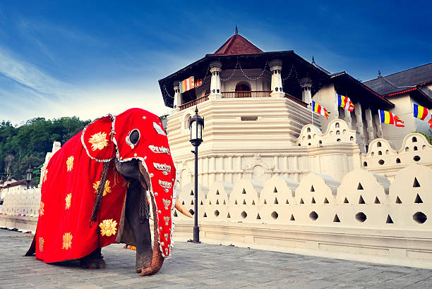
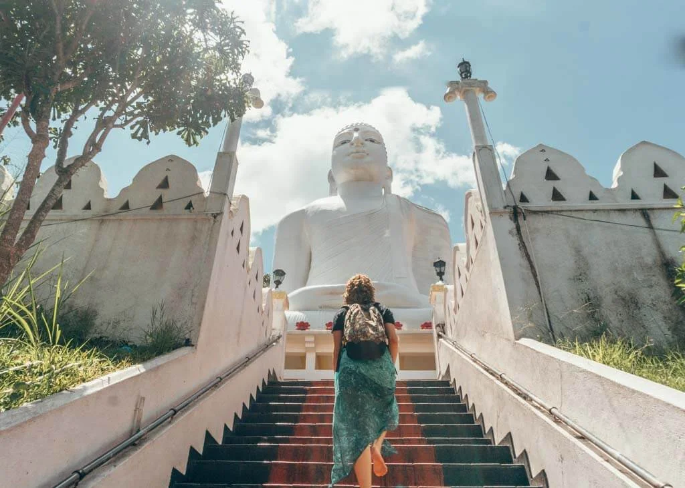
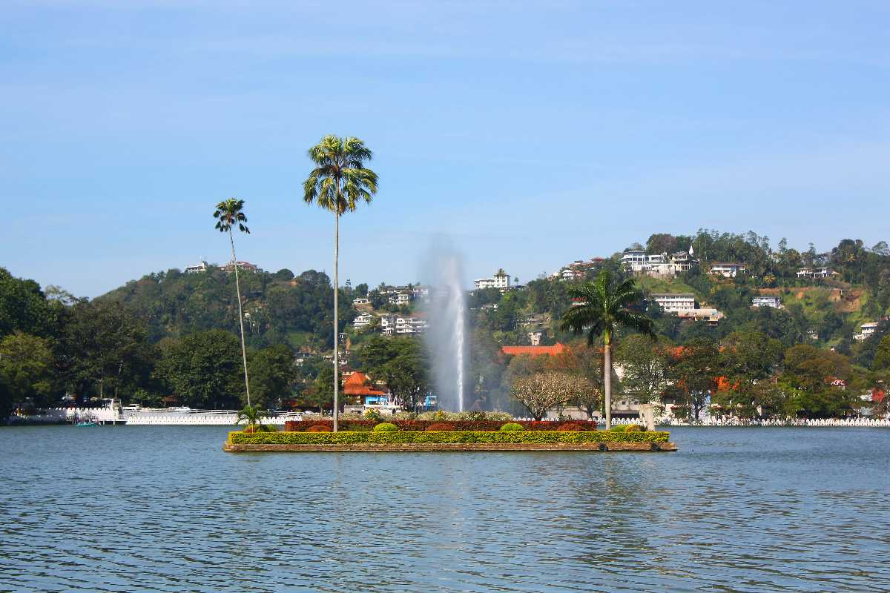
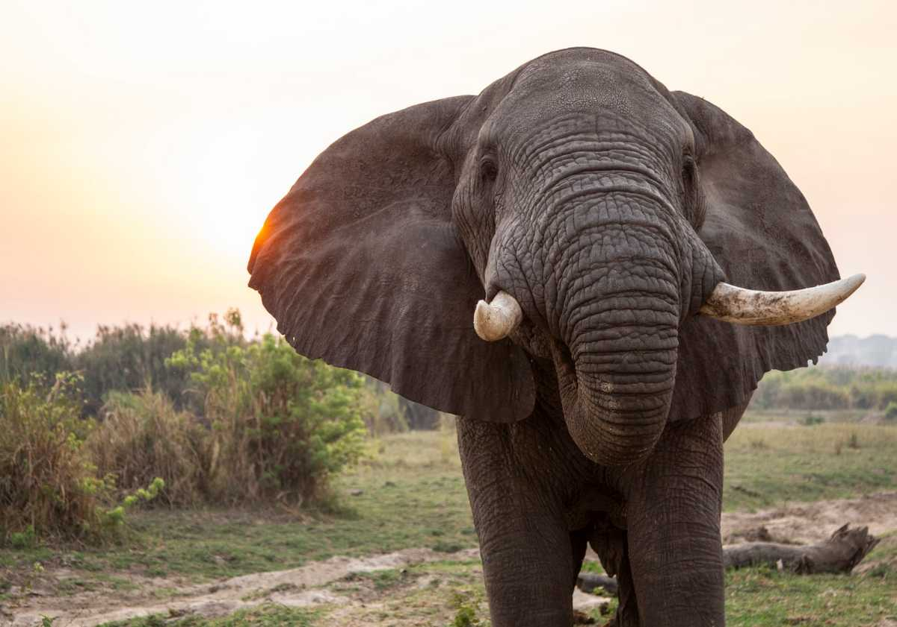
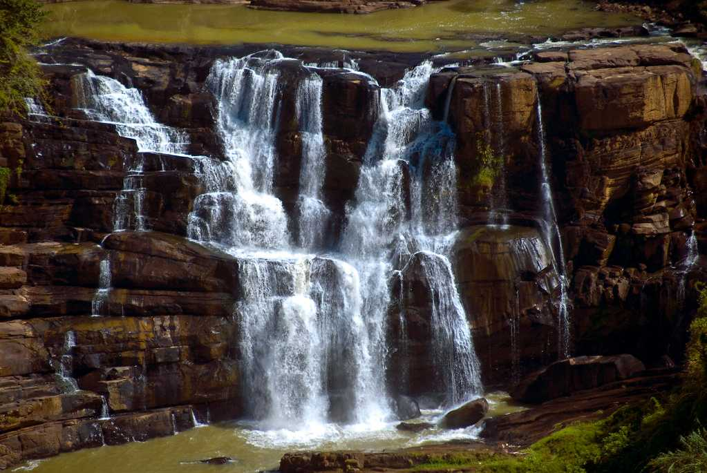
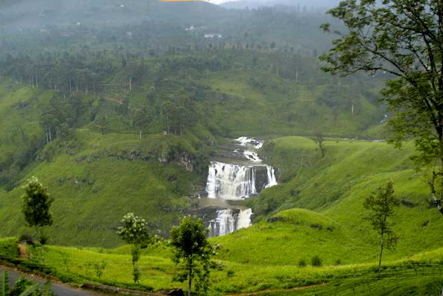
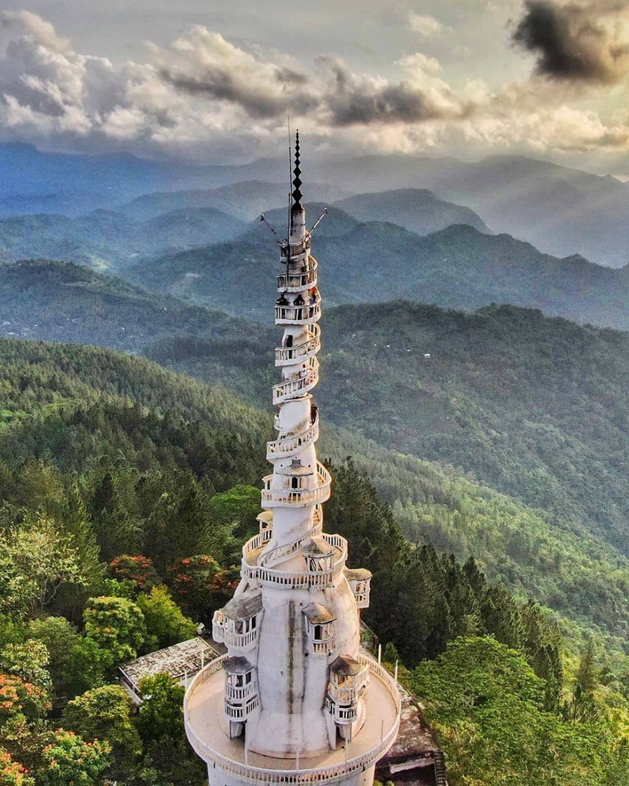

nilame
Sri Dalada MaligawaOne of the most sacred Buddhist sites in the world, this temple houses a tooth relic of Lord Buddha. Located within the royal palace complex, it's a UNESCO World Heritage Site and a symbol of spiritual and political significance. |
BahirawakandaA hilltop temple in Kandy with a massive white Buddha statue. The site offers sweeping views of the city and represents peace, meditation, and the enlightenment of Buddha. |
 Botanical GardenThe Royal Botanical Gardens in Peradeniya feature over 4000 species of plants, including orchids and spices. A serene escape for nature lovers, it's known for its landscaped beauty and historical roots. |
Kandy LakeBuilt in 1807 by King Sri Wickrama Rajasinghe, this lake is in the heart of Kandy. A peaceful spot for boat rides, surrounded by legends and beautiful greenery. |
 Hanthana MountainPopular among hikers and nature lovers, this mountain range provides an exhilarating climb and stunning views of Kandy. It’s also a hotspot for birdwatching. |
Maduru Oya National ParkA sanctuary for wildlife, especially elephants, and ancient ruins. The park offers a rare chance to see nature and heritage preserved together in harmony. |
Kadiyanlena FallsA hidden waterfall gem located about 2 hours from Kandy, ideal for quiet exploration and photography. |
Saree EllaNamed after the folds of a saree, this waterfall in Gomara is known for its graceful, elegant flow and natural beauty. |
Ambuluwawa TowerA unique multi-religious shrine and tower in Gampola, offering breathtaking views from its narrow spiral path—popular among adventurers and photographers alike. |